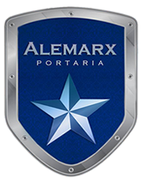

O serviço de portaria se destaca pelo alto grau de segurança proporcionado. Tudo porquê, junto com as mais modernas técnicas de gerenciamento de pessoal e motivação de equipe, são utilizados equipamentos da mais alta tecnologia aliados aos mais exigentes padrões de confiabilidade.
Um dos grandes diferenciais na execução de um posto de portaria, se identifica no apoio operacional prestado ao profissional. Esse apoio representa a manutenção e a permanência do profissional em seu posto, mantendo-o concentrado e direcionado exclusivamente ao cumprimento de sua função.
E, da mesma forma que os profissionais vigilantes, os porteiros são parte fundamental de um Sistema Integrado de Proteção, pois executam a identificação, o controle de acesso e a própria organização nas recepções dos locais onde atuam.
Cabem aos profissionais vigilantes de portaria, proporcionar um conjunto de medidas integradas de proteção, com a finalidade de manter a integridade física do patrimônio, seus valores e vidas. Prestar informações de apoio a todos e proporcionar fluxo adequado, mantendo a ordem no ambiente. Manual de Procedimentos para serviços de portaria. Será preparado no inicio do contrato, um Manual de Procedimentos da Portaria, que unirão os procedimentos de segurança da empresa com o Regulamento Interno do condomínio, para melhor orientação dos vigilantes de portaria.